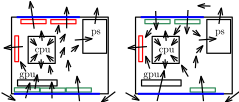

| tags:[ pc ]
PC build
For over 13 years I rely on laptops to provide me with computing. The first few I used ASUS PRO5DID-SX128V and the last 9 years were dominated by brilliant ASUS N56JN-CN047. The notebook got a new SSD and battery by the end of 2017, that was the last upgrade. There, I dual boot windows for games and ubuntu for everything else.
I always wanted to get a “good” pc once I find a more permanent place but why wait? The main reason is portability – moving PC with a huge chassis is not very convenitent. There were several factors that made it clear that the right time has come.
No Boilerplate’s video ↗ made a point that one can get a mini PC like UM790 Pro that provides enough power for even a bit more demanding tasks (e.g. editing or gaming). Another point was that linux now works pretty well even for gaming because of the recent proton push of steam for their steam deck. See Protondb ↗ to find how well a game works with proton. I considered getting the recommended mini PC as compared to many other options it seems like a good option. Mini PCs provide an extremely small form factor but cut on performance (as they use mobile graphics cards), extendibility (you cannot really change anything but M.2 Disk or RAM), and you pay premium for it. I contacted Štěpán, we talked about other options and he offered to put together a list of part recommendations for a small PC. The next day we went over those and found equivalent parts sold in UK.
Parts
The final list structured by what goes where is as follows.
- PC Case – GameMax Spark Gaming Cube ↗ Micro-ATX
- motherboard – TUF Gaming B650M-E WIFI ↗ (Socket AM5/B650/DDR5/S-ATA 6Gb/s/Micro ATX)
- processor – AMD Ryzen 5 7600X ↗
- CPU Cooler – Noctua NH-L9x65 ↗
- RAM – Corsair Vengeance ↗ DDR5 32GB 6000MHz CL30
- storage – Crucial T500 1TB PCIe Gen4 NVMe M.2 SSD ↗
- graphics card – ASUS Dual AMD Radeon RX 7600 V2 OC ↗ Edition 8GB GDDR6
- processor – AMD Ryzen 5 7600X ↗
- power supply – Corsair RM750e ↗ Fully Modular ATX Power Supply
- chassis fans – Arctic P12 PWM PST (5 Pack) ↗
- motherboard – TUF Gaming B650M-E WIFI ↗ (Socket AM5/B650/DDR5/S-ATA 6Gb/s/Micro ATX)
The build is small – chassis is Micro-ATX ↗ – this box fits into airplane cabin baggage. For that, a Micro-ATX motherboard along with processor (AM5 socket), 2x RAM (DDR5), and storage (M.2) that have no issue fitting in. We have to be careful about CPU cooler and graphics card because the box does not provide that much space so we picked ones that are small enough. The power supply can deliver about 200W than the sum of requirements for the parts. Chassis fans are “good enough”.
Build
Before starting I looked at a few walkthroughs, one I also used during the assembly is one from PC mag ↗.
Let us go through the entire assembly. The parts arrive in several batches. Luckily, they come in the right order so we can start assembling them immediately. Motherboard, processor, RAM, storage, power supply, and CPU cooler arrive first. Though scary, these parts are easy to install. For processor, its socket opens by the use of a lever. We make sure that the processor is aligned correctly and then push it down with the lever until the plastic cover pops away. RAMs are just pushed down until they click, but it was mentioned to me that several times that one of the most frequent failures to start PC is by having RAMs incorrectly inserted – just not deep enough in their sockets. For SSD we have to remove its cover, push it into its socket, and then cover it with the supplied cover. Note that one should remove the plastic cover to make contact with SSD so that it is properly cooled.
Few days pass and the graphics card and chassis arrive. Finally, having all parts in hand we can put it all together. First, we install the chassis post screws (thanks Rob ↗) – those are not installed by default because the chassis can also hold even smaller Mini ITX motherboard.
Then we install the CPU cooler. Noctua has posts that can shift cooling ↗ to achieve better position for newer processors. We install the posts first, apply thermal paste, and put down the cooler. Applying thermal paste is just about applying the right amount as it spreads when the cooler is pressed to the processor with big force. The cooler proves to be difficult to install as the screws do not seem to fit at first because when we align and screw in one side the other side was slightly off. Meddling with it for a while the issue is resolved by loosening the posts on both sides a bit which makes the alignment possible. After that we put back the fan and connect the fan to the CPU_FAN pin. With this step the preparation of the motherboard was complete.
Next, the motherboard goes to the case. Handling the motherboard is, as many other steps, quite scare. Just make sure to handle it by its sides or firmly attached ports. We lower the board sideways, grab it with a hand that goes through back of the case, and then lower it to its final position. Then we screw it in while not losing the screw for a minute like I did.
Having the motherboard secured, we install the power supply. My mistake was not plugging the necessary cables in advance, plugging them in while the supply is in the case is pretty difficult.
After that we remove slots where the graphics card goes. The graphics card clicks into place and is further secured with slot screws.
Then we plug all the power supply cables to the motherboard and GPU. Waving them through back of the chassis when appropriate.
For the initial setup we can use a smartphone to provide tethered internet through USB. We install the system, boot, and go live! This step may go surprisingly smoothly. And yes, something is still missing – there are no fans yet so initially I used the PC with an open case for a few days. Right away I noticed that the noise level is quite high. This was caused by the power supply fan so I ordered a different power supply (never open a power supply); the same model was not in supply so I got a different one.
Few days later fans and the new power supply arrived. The installation takes a while; to access fan space we remove the GPU and remove all the power cables. The fans can be serially chained so the cables can reach pretty far. I chose to install them in the following (left) configuration, trying to keep positive pressure so that dust is not sucked in through spaces in chassis. Note that we can change speed of fans in the boot menu so even with imbalance in the number of fans we can keep the positive pressure.
Picture 1. green: intake fans, red: outtake fans, blue: dust filters, arrows: intention for the airflow
The mistake is clear immediately after booting. The noise level is high but the sound seems to come from turbulence rather than mechanical fault. It seems that having a fan that close to graphics card could be the issue. When the speed of fans that are close after each other is too different it may cause fluctuation in pressure in between them, implying noise. We rework the fans so that there is none in front of the GPU (picture above, right) and the noise goes away. We change fan speed in boot settings as required; I opted for low noise which could be perhaps achieve low temperatures if I had a set of better fans. Note that bigger fans are less noisy as they can spin slower to deliver the same performance. For that reason, four 14cm fans would have been better for this chassis.
Last, we do little cable management, close the chassis sides, close back the top, plug the power in and run. From then on, the beast runs smoothly as panda on a slide ↗. We’ll see how hard is it to move such a PC to a different country but that part of this story is scheduled for 2025.